2026 National 5 Mathematics - Paper 1 marking instructions
Source: Scottish Qualifications Authority (SQA) / Qualifications Scotland. This is a StemInteract HTML companion, not an official HTML edition. Selectable text is supplied alongside original page images. Use the images or original PDF for equations, powers, fractions, vector notation, tables and diagrams; text extraction cannot fully preserve mathematical layout.
Jump to a question
PDF page 1
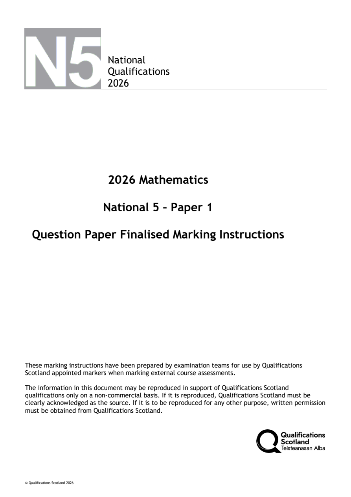
Selectable page text
National
Qualifications
2026
2026 Mathematics
National 5 – Paper 1
Question Paper Finalised Marking Instructions
These marking instructions have been prepared by examination teams for use by Qualifications
Scotland appointed markers when marking external course assessments.
The information in this document may be reproduced in support of Qualifications Scotland
qualifications only on a non-commercial basis. If it is reproduced, Qualifications Scotland must be
clearly acknowledged as the source. If it is to be reproduced for any other purpose, written permission
must be obtained from Qualifications Scotland.
© Qualifications Scotland 2026PDF page 2
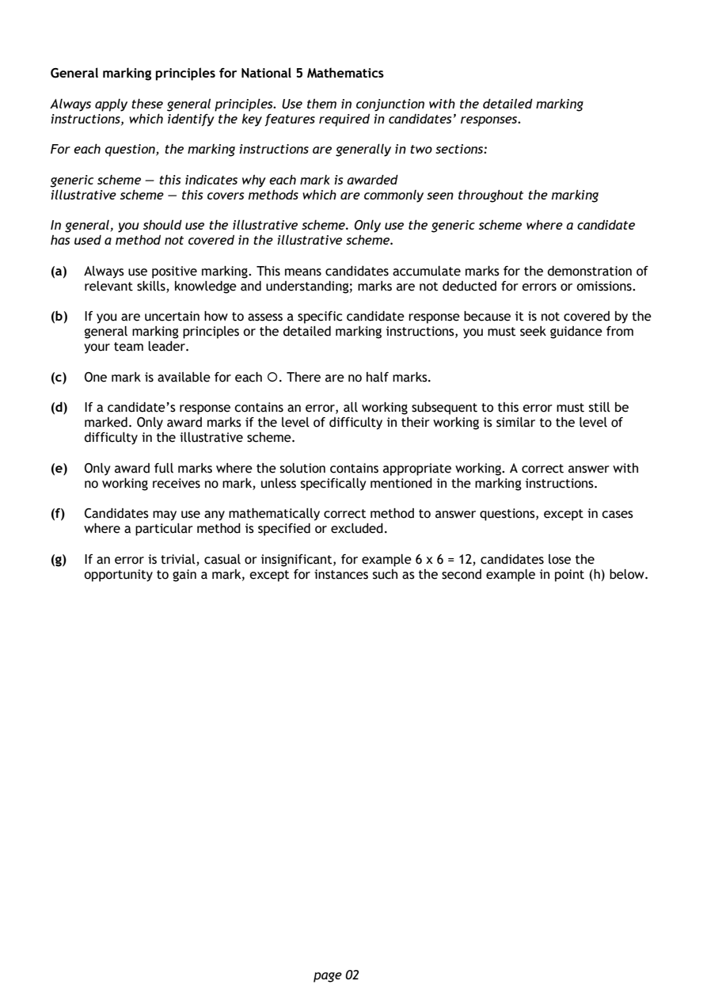
Selectable page text
General marking principles for National 5 Mathematics
Always apply these general principles. Use them in conjunction with the detailed marking
instructions, which identify the key features required in candidates’ responses.
For each question, the marking instructions are generally in two sections:
generic scheme — this indicates why each mark is awarded
illustrative scheme — this covers methods which are commonly seen throughout the marking
In general, you should use the illustrative scheme. Only use the generic scheme where a candidate
has used a method not covered in the illustrative scheme.
(a) Always use positive marking. This means candidates accumulate marks for the demonstration of
relevant skills, knowledge and understanding; marks are not deducted for errors or omissions.
(b) If you are uncertain how to assess a specific candidate response because it is not covered by the
general marking principles or the detailed marking instructions, you must seek guidance from
your team leader.
(c) One mark is available for each . There are no half marks.
(d) If a candidate’s response contains an error, all working subsequent to this error must still be
marked. Only award marks if the level of difficulty in their working is similar to the level of
difficulty in the illustrative scheme.
(e) Only award full marks where the solution contains appropriate working. A correct answer with
no working receives no mark, unless specifically mentioned in the marking instructions.
(f) Candidates may use any mathematically correct method to answer questions, except in cases
where a particular method is specified or excluded.
(g) If an error is trivial, casual or insignificant, for example 6 x 6 = 12, candidates lose the
opportunity to gain a mark, except for instances such as the second example in point (h) below.
page 02PDF page 3
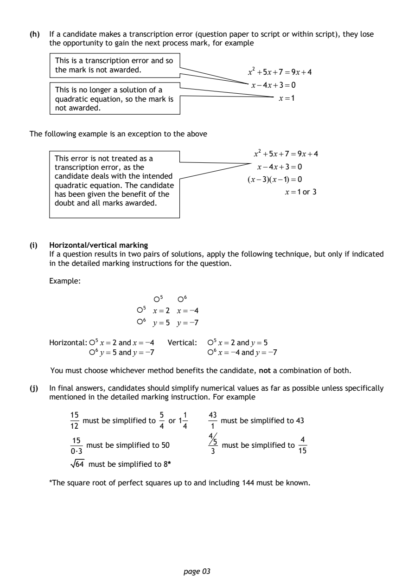
Selectable page text
(h) If a candidate makes a transcription error (question paper to script or within script), they lose
the opportunity to gain the next process mark, for example
This is a transcription error and so
the mark is not awarded. x² +5x+7 =9x+4
x−4x+3=0
This is no longer a solution of a
quadratic equation, so the mark is x=1
not awarded.
The following example is an exception to the above
x² +5x+7 =9x+4
This error is not treated as a
transcription error, as the x−4x+3=0
candidate deals with the intended
(x−3)(x−1)=0
quadratic equation. The candidate
x=1 or 3
has been given the benefit of the
doubt and all marks awarded.
(i) Horizontal/vertical marking
If a question results in two pairs of solutions, apply the following technique, but only if indicated
in the detailed marking instructions for the question.
Example:
5 6
5 x = 2 x = −4
6 y = 5 y = −7
Horizontal: ⁵ x = 2 and x = −4 Vertical: 5 x = 2 and y = 5
6 y = 5 and y = −7 6 x = −4 and y = −7
You must choose whichever method benefits the candidate, not a combination of both.
(j) In final answers, candidates should simplify numerical values as far as possible unless specifically
mentioned in the detailed marking instruction. For example
15 5 1 43
must be simplified to or 1 must be simplified to 43
12 4 4 1
4
15 5 4
must be simplified to 50 must be simplified to
0·3 3 15
64 must be simplified to 8*
*The square root of perfect squares up to and including 144 must be known.
page 03PDF page 4
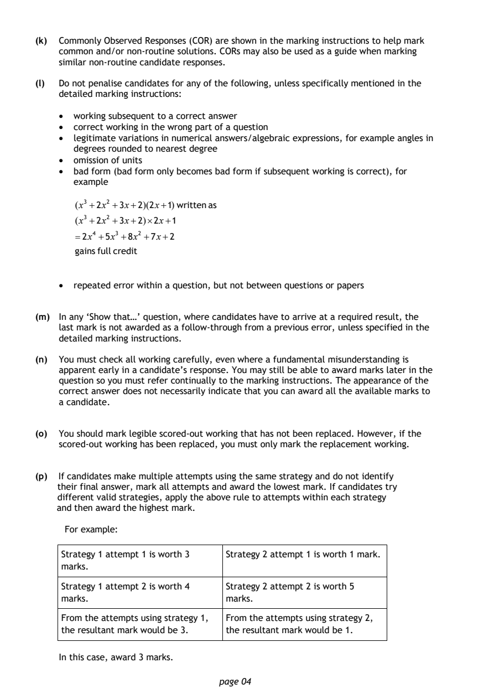
Selectable page text
(k) Commonly Observed Responses (COR) are shown in the marking instructions to help mark
common and/or non-routine solutions. CORs may also be used as a guide when marking
similar non-routine candidate responses.
(l) Do not penalise candidates for any of the following, unless specifically mentioned in the
detailed marking instructions:
• working subsequent to a correct answer
• correct working in the wrong part of a question
• legitimate variations in numerical answers/algebraic expressions, for example angles in
degrees rounded to nearest degree
• omission of units
• bad form (bad form only becomes bad form if subsequent working is correct), for
example
(x³ +2x² +3x+2)(2x+1) written as
(x³ +2x² +3x+2)×2x+1
=2x⁴ +5x³ +8x² +7x+2
gains full credit
• repeated error within a question, but not between questions or papers
(m) In any ‘Show that…’ question, where candidates have to arrive at a required result, the
last mark is not awarded as a follow-through from a previous error, unless specified in the
detailed marking instructions.
(n) You must check all working carefully, even where a fundamental misunderstanding is
apparent early in a candidate’s response. You may still be able to award marks later in the
question so you must refer continually to the marking instructions. The appearance of the
correct answer does not necessarily indicate that you can award all the available marks to
a candidate.
(o) You should mark legible scored-out working that has not been replaced. However, if the
scored-out working has been replaced, you must only mark the replacement working.
(p) If candidates make multiple attempts using the same strategy and do not identify
their final answer, mark all attempts and award the lowest mark. If candidates try
different valid strategies, apply the above rule to attempts within each strategy
and then award the highest mark.
For example:
Strategy 1 attempt 1 is worth 3 Strategy 2 attempt 1 is worth 1 mark.
marks.
Strategy 1 attempt 2 is worth 4 Strategy 2 attempt 2 is worth 5
marks. marks.
From the attempts using strategy 1, From the attempts using strategy 2,
the resultant mark would be 3. the resultant mark would be 1.
In this case, award 3 marks.
page 04PDF page 5
Paper 1, Question 1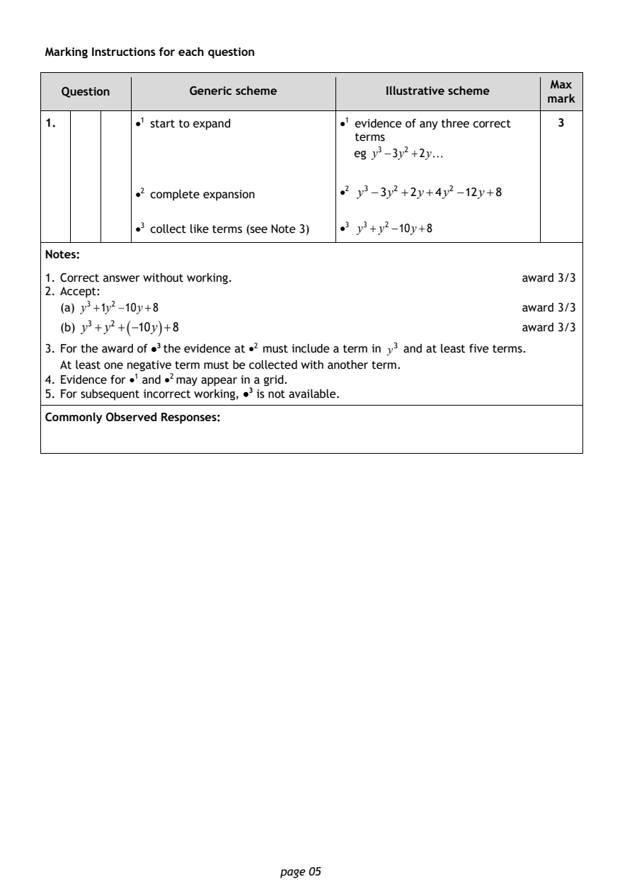
Selectable page text
Marking Instructions for each question
Max
Question Generic scheme Illustrative scheme
mark
1. •1 start to expand •1 evidence of any three correct 3
terms
eg y³−3y²+2y
•2 complete expansion •2 y³−3y² +2y+4y² −12y+8
•3 collect like terms (see Note 3) •3 y³+y²−10y+8
Notes:
1. Correct answer without working. award 3/3
2. Accept:
(a) y³+1y²−10y+8 award 3/3
(b)
y³+y²+(−10y)+8
award 3/3
3. For the award of •³ the evidence at •² must include a term in y³ and at least five terms.
At least one negative term must be collected with another term.
4. Evidence for •¹ and •² may appear in a grid.
5. For subsequent incorrect working, •³ is not available.
Commonly Observed Responses:
page 05PDF page 6
Paper 1, Question 2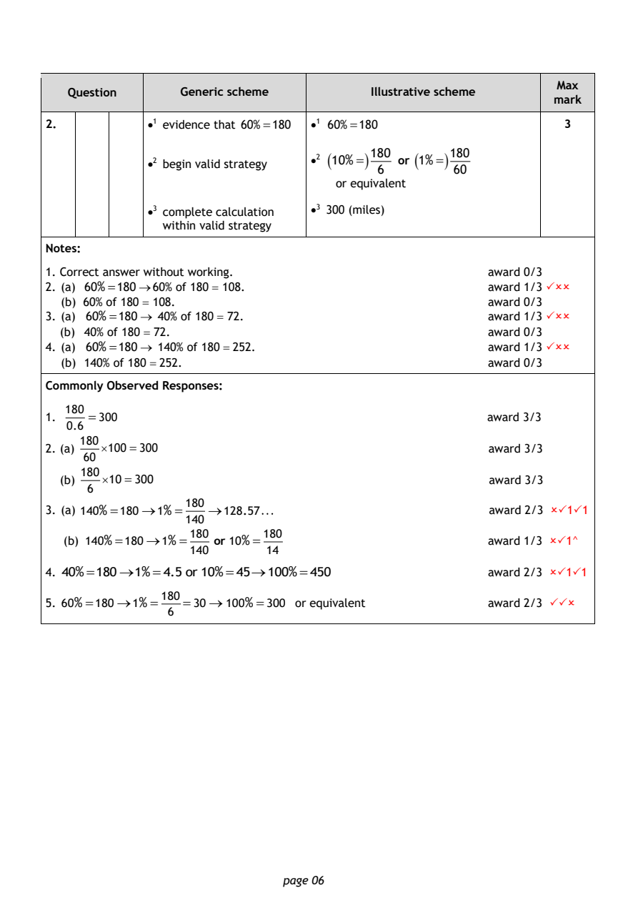
Selectable page text
Max
Question Generic scheme Illustrative scheme
mark
2. •1 evidence that 60%=180 •1 60%=180 3
180 180
•2 begin valid strategy •2 (10%=) or (1%=)
6 60
or equivalent
•3 complete calculation •3 300 (miles)
within valid strategy
Notes:
1. Correct answer without working. award 0/3
2. (a) 60%=180→60% of 180 = 108. award 1/3
(b) 60% of 180 = 108. award 0/3
3. (a) 60%=180→ 40% of 180 = 72. award 1/3
(b) 40% of 180 = 72. award 0/3
4. (a) 60%=180→ 140% of 180 = 252. award 1/3
(b) 140% of 180 = 252. award 0/3
C ommonly Observed Responses:
180
1. =300 award 3/3
0.6
180
2. (a) ×100=300 award 3/3
60
180
(b) ×10=300 award 3/3
6
180
3. (a) 140%=180→1%= →128.57 award 2/3 11
140
180 180
(b) 140%=180→1%= or 10%= award 1/3 1^
140 14
4. 40%=180→1%=4.5 or10%=45→100%=450 award 2/3 11
180
5. 60%=180→1%= =30→100%=300 or equivalent award 2/3
6
page 06PDF page 7
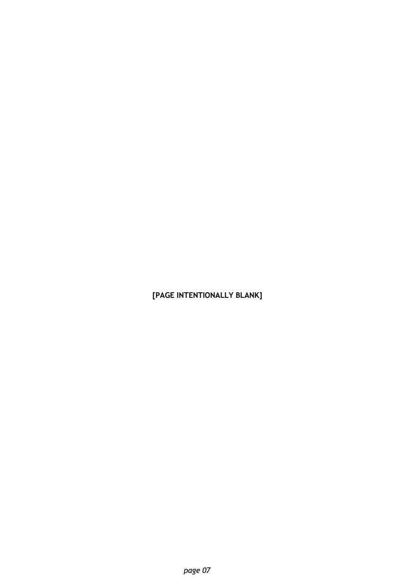
Selectable page text
[PAGE INTENTIONALLY BLANK]
page 07PDF page 8
Paper 1, Question 3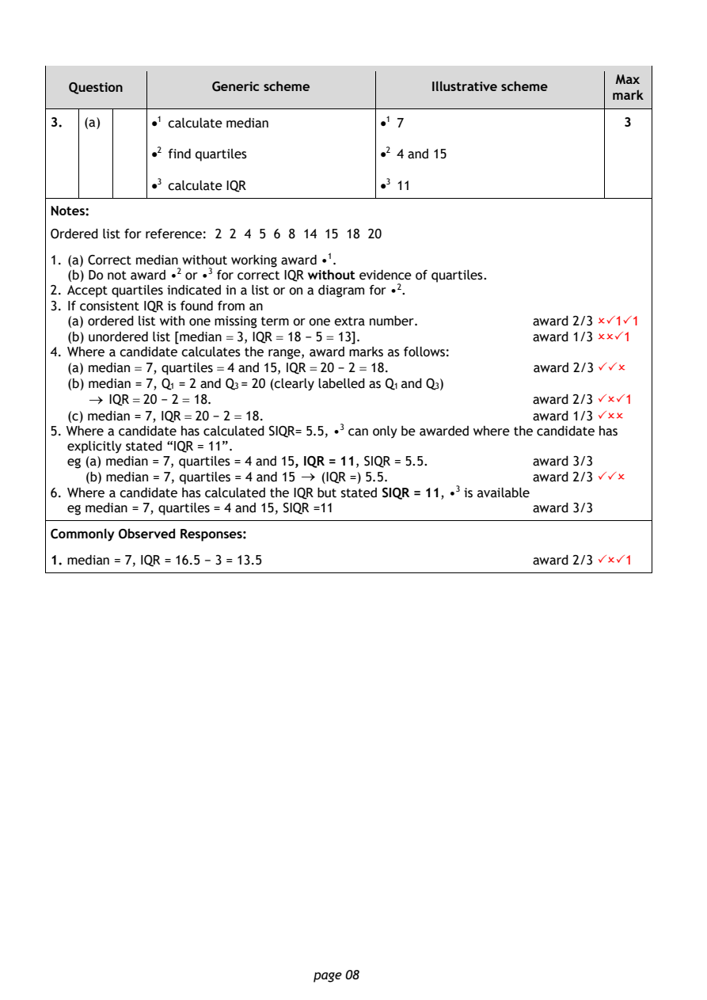
Selectable page text
Max
Question Generic scheme Illustrative scheme
mark
3. (a) •1 calculate median •1 7 3
•2 find quartiles •2 4 and 15
•3 calculate IQR •3 11
Notes:
Ordered list for reference: 2 2 4 5 6 8 14 15 18 20
1. (a) Correct median without working award •¹.
(b) Do not award •² or •³ for correct IQR without evidence of quartiles.
2. Accept quartiles indicated in a list or on a diagram for •².
3. If consistent IQR is found from an
(a) ordered list with one missing term or one extra number. award 2/3 11
(b) unordered list [median = 3, IQR = 18 − 5 = 13]. award 1/3 1
4. Where a candidate calculates the range, award marks as follows:
(a) median = 7, quartiles = 4 and 15, IQR = 20 − 2 = 18. award 2/3
(b) median = 7, Q = 2 and Q = 20 (clearly labelled as Q and Q )
3 1 3
→ IQR = 20 − ¹2 = 18. award 2/3 1
(c) median = 7, IQR = 20 − 2 = 18. award 1/3
5. Where a candidate has calculated SIQR= 5.5, •³ can only be awarded where the candidate has
explicitly stated “IQR = 11”.
eg (a) median = 7, quartiles = 4 and 15, IQR = 11, SIQR = 5.5. award 3/3
(b) median = 7, quartiles = 4 and 15 → (IQR =) 5.5. award 2/3
6. Where a candidate has calculated the IQR but stated SIQR = 11, •³ is available
eg median = 7, quartiles = 4 and 15, SIQR =11 award 3/3
Commonly Observed Responses:
1. median = 7, IQR = 16.5 − 3 = 13.5 award 2/3 1
page 08PDF page 9
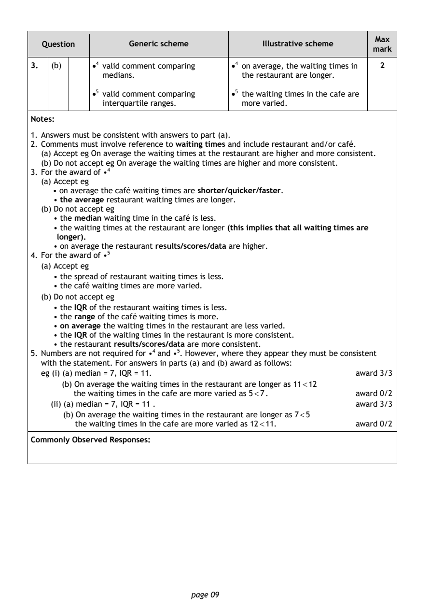
Selectable page text
Max
Question Generic scheme Illustrative scheme
mark
3 . (b) •4 valid comment comparing •4 on average, the waiting times in 2
medians. the restaurant are longer.
•5 valid comment comparing •5 the waiting times in the cafe are
interquartile ranges. more varied.
Notes:
1. Answers must be consistent with answers to part (a).
2. Comments must involve reference to waiting times and include restaurant and/or café.
(a) Accept eg On average the waiting times at the restaurant are higher and more consistent.
(b) Do not accept eg On average the waiting times are higher and more consistent.
3. For the award of •⁴
(a) Accept eg
• on average the café waiting times are shorter/quicker/faster.
• the average restaurant waiting times are longer.
(b) Do not accept eg
• the median waiting time in the café is less.
• the waiting times at the restaurant are longer (this implies that all waiting times are
longer).
• on average the restaurant results/scores/data are higher.
4. For the award of •⁵
(a) Accept eg
• the spread of restaurant waiting times is less.
• the café waiting times are more varied.
(b) Do not accept eg
• the IQR of the restaurant waiting times is less.
• the range of the café waiting times is more.
• on average the waiting times in the restaurant are less varied.
• the IQR of the waiting times in the restaurant is more consistent.
• the restaurant results/scores/data are more consistent.
5. Numbers are not required for •⁴ and •⁵. However, where they appear they must be consistent
with the statement. For answers in parts (a) and (b) award as follows:
eg (i) (a) median = 7, IQR = 11. award 3/3
(b) On average the waiting times in the restaurant are longer as 11<12
the waiting times in the cafe are more varied as 5<7 . award 0/2
(ii) (a) median = 7, IQR = 11 . award 3/3
(b) On average the waiting times in the restaurant are longer as 7<5
the waiting times in the cafe are more varied as 12<11. award 0/2
Commonly Observed Responses:
page 09PDF page 10
Paper 1, Question 4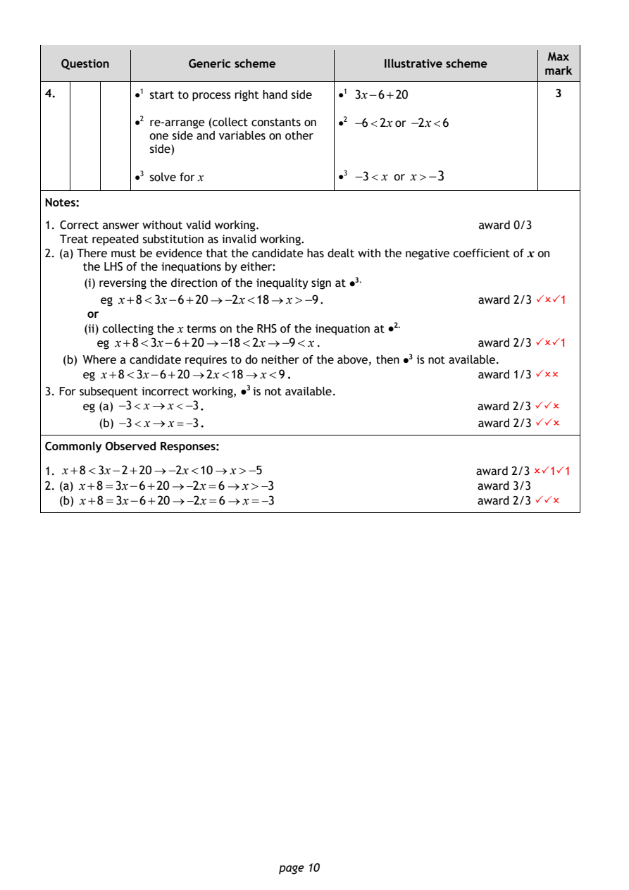
Selectable page text
Max
Question Generic scheme Illustrative scheme
mark
4. •1 start to process right hand side •1 3x−6+20 3
•2 re-arrange (collect constants on •2 −6<2xor −2x<6
one side and variables on other
side)
•3 solve for x •3 −3< x or x>−3
Notes:
1. Correct answer without valid working. award 0/3
Treat repeated substitution as invalid working.
2. (a) There must be evidence that the candidate has dealt with the negative coefficient of x on
the LHS of the inequations by either:
(i) reversing the direction of the inequality sign at •³^{.}
eg x+8<3x−6+20→−2x<18→x>−9. award 2/3 1
or
(ii) collecting the x terms on the RHS of the inequation at •²^{.}
eg x+8<3x−6+20→−18<2x→−9< x. award 2/3 1
(b) Where a candidate requires to do neither of the above, then •³ is not available.
eg x+8<3x−6+20→2x<18→x<9. award 1/3
3. For subsequent incorrect working, •³ is not available.
eg (a) −3< x→x<−3. award 2/3
(b) −3< x→x=−3. award 2/3
Commonly Observed Responses:
1. x+8<3x−2+20→−2x<10→x>−5 award 2/3 11
2. (a) x+8=3x−6+20→−2x=6→x>−3 award 3/3
(b) x+8=3x−6+20→−2x=6→x=−3 award 2/3
page 10PDF page 11
Paper 1, Question 5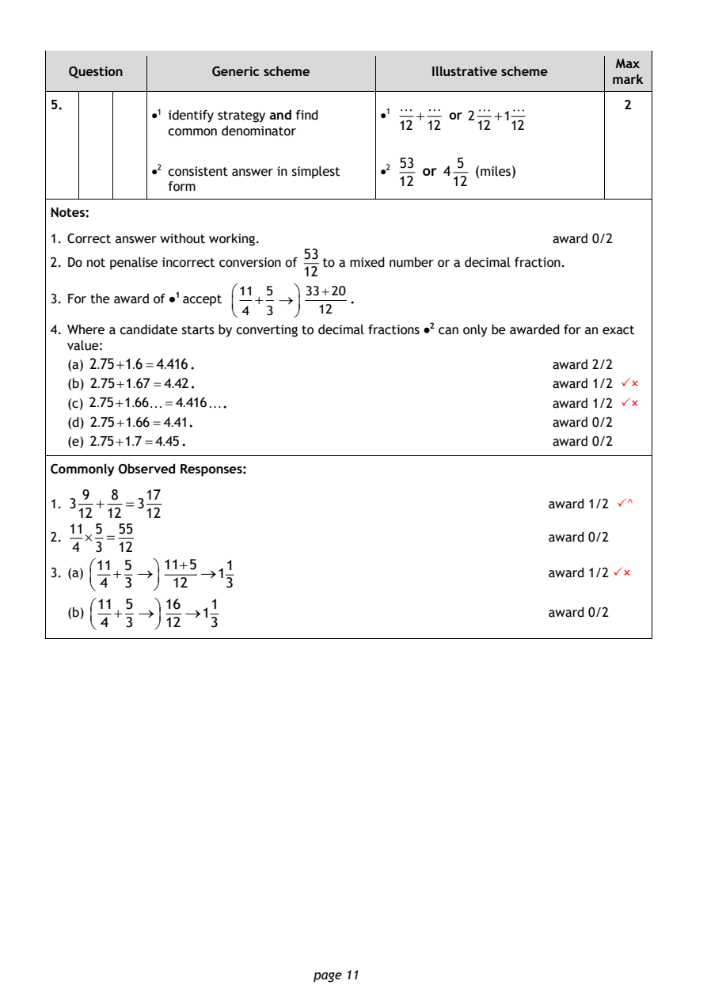
Selectable page text
Max
Question Generic scheme Illustrative scheme
mark
5. 2
•1 identify strategy and find •1 + or 2 +1
12 12 12 12
common denominator
53 5
•2 consistent answer in simplest •2 or 4 (miles)
12 12
form
Notes:
1. Correct answer without working. award 0/2
53
2. Do not penalise incorrect conversion of to a mixed number or a decimal fraction.
12
11 5 33+20
3. For the award of •¹ accept + → .
4 3 12
4. Where a candidate starts by converting to decimal fractions •² can only be awarded for an exact
value:
(a) 2.75+1.6=4.416. award 2/2
(b) 2.75+1.67=4.42. award 1/2
(c) 2.75+1.66=4.416 . award 1/2
(d) 2.75+1.66=4.41. award 0/2
(e) 2.75+1.7=4.45. award 0/2
Commonly Observed Responses:
9 8 17
1. 3 + =3 award 1/2 ^
12 12 12
11 5 55
2. × = award 0/2
4 3 12
11 5 11+5 1
3. (a) + → →1 award 1/2
4 3 12 3
11 5 16 1
(b) + → →1 award 0/2
4 3 12 3
page 11PDF page 12
Paper 1, Question 6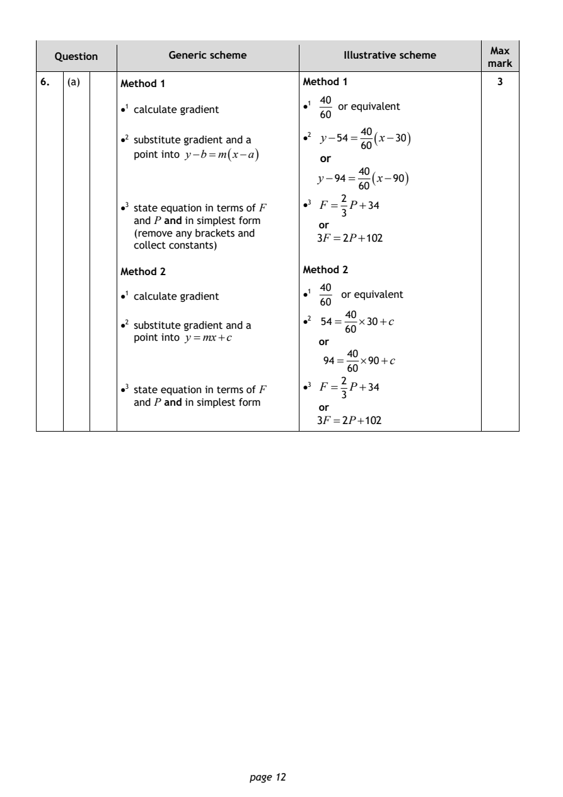
Selectable page text
Max
Question Generic scheme Illustrative scheme
mark
6. (a) Method 1 Method 1 3
40
•1 calculate gradient •1 or equivalent
60
40
•2 substitute gradient and a •2 y−54 = (x−30 )
60
point into y−b=m(x−a)
or
40
y−94 = (x−90 )
60
2
•3 state equation in terms of F •3 F = P+34
3
and P and in simplest form
or
(remove any brackets and
3F =2P+102
collect constants)
Method 2 Method 2
40
•1 calculate gradient •1 or equivalent
60
40
•2 substitute gradient and a •2 54 = ×30+c
60
point into y=mx+c
or
40
94 = ×90+c
60
2
•3 state equation in terms of F •3 F = P+34
3
and P and in simplest form
or
3F =2P+102
page 12PDF page 13
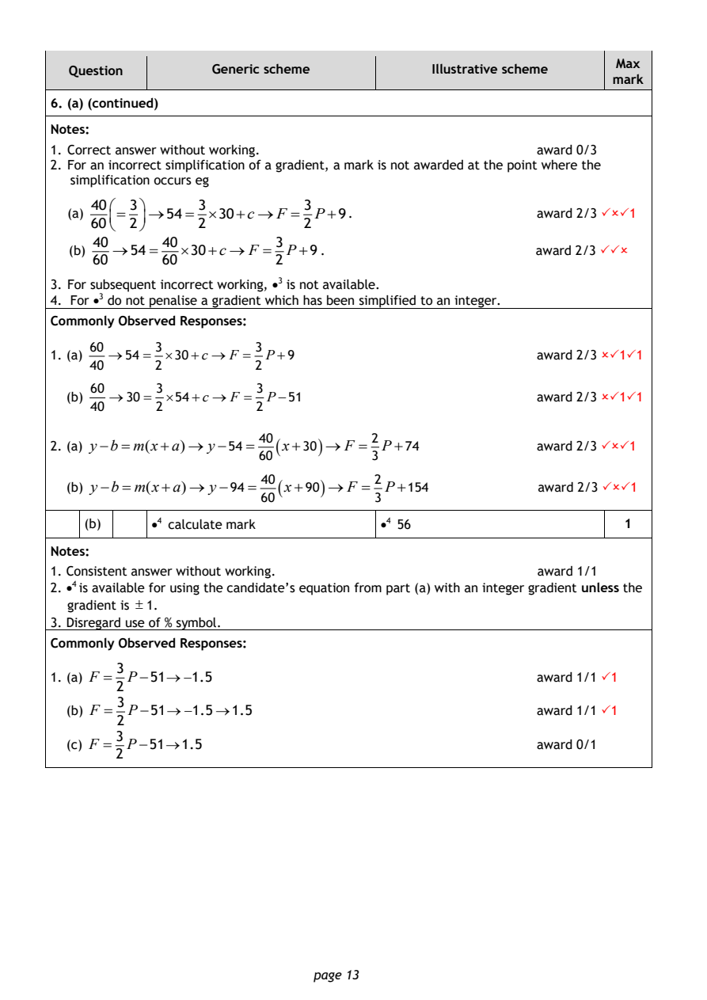
Selectable page text
Max
Question Generic scheme Illustrative scheme
mark
6. (a) (continued)
Notes:
1. Correct answer without working. award 0/3
2. For an incorrect simplification of a gradient, a mark is not awarded at the point where the
simplification occurs eg
40 3 3 3
(a) = →54= ×30+c→F = P+9. award 2/3 1
60 2 2 2
40 40 3
(b) →54 = ×30+c→F = P+9. award 2/3
60 60 2
3. For subsequent incorrect working, •³ is not available.
4. For •³ do not penalise a gradient which has been simplified to an integer.
Commonly Observed Responses:
60 3 3
1. (a) →54 = ×30+c→F = P+9 award 2/3 11
40 2 2
60 3 3
(b) →30= ×54+c→F = P−51 award 2/3 11
40 2 2
40 2
2. (a) y−b=m(x+a)→ y−54 = (x+30 )→F = P+74 award 2/3 1
60 3
40 2
(b) y−b=m(x+a)→ y−94 = (x+90 )→F = P+154 award 2/3 1
60 3
(b) •4 calculate mark •4 56 1
Notes:
1. Consistent answer without working. award 1/1
2. •⁴ is available for using the candidate’s equation from part (a) with an integer gradient unless the
gradient is ±1.
3. Disregard use of % symbol.
Commonly Observed Responses:
3
1. (a) F = P−51→−1.5 award 1/1 1
2
3
(b) F = P−51→−1.5→1.5 award 1/1 1
2
3
(c) F = P−51→1.5 award 0/1
2
page 13PDF page 14
Paper 1, Question 7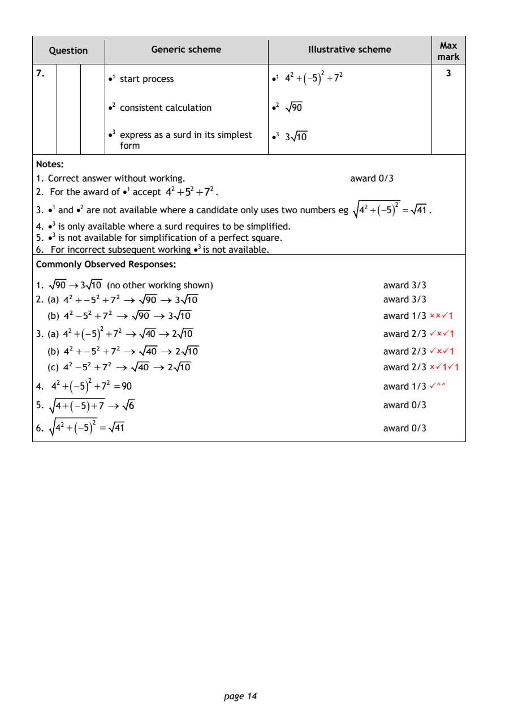
Selectable page text
Max
Question Generic scheme Illustrative scheme
mark
7. •1 start process •1 4² +( −5)² +7² 3
•2 consistent calculation •2 90
•3 express as a surd in its simplest •3 3 10
form
Notes:
1. Correct answer without working. award 0/3
2. For the award of •¹ accept 4²+5²+7².
3. •¹ and •² are not available where a candidate only uses two numbers eg 4² +(−5)² = 41.
4. •³ is only available where a surd requires to be simplified.
5. •³ is not available for simplification of a perfect square.
6. For incorrect subsequent working •³ is not available.
Commonly Observed Responses:
1. 90 →3 10 (no other working shown) award 3/3
2. (a) 4² +−5² +7² → 90 → 3 10 award 3/3
(b) 4² −5² +7² → 90 → 3 10 award 1/3 1
3. (a) 4²+(−5 ) ²+7² → 40 →2 10 award 2/3 1
(b) 4² +−5² +7² → 40 → 2 10 award 2/3 1
(c) 4² −5² +7² → 40 → 2 10 award 2/3 11
4. 4²+(−5 ) ²+7² =90 award 1/3 ^^
5. 4+(−5 )+7 → 6 award 0/3
6. 4² +(−5 ) ² = 41 award 0/3
page 14PDF page 15
Paper 1, Question 8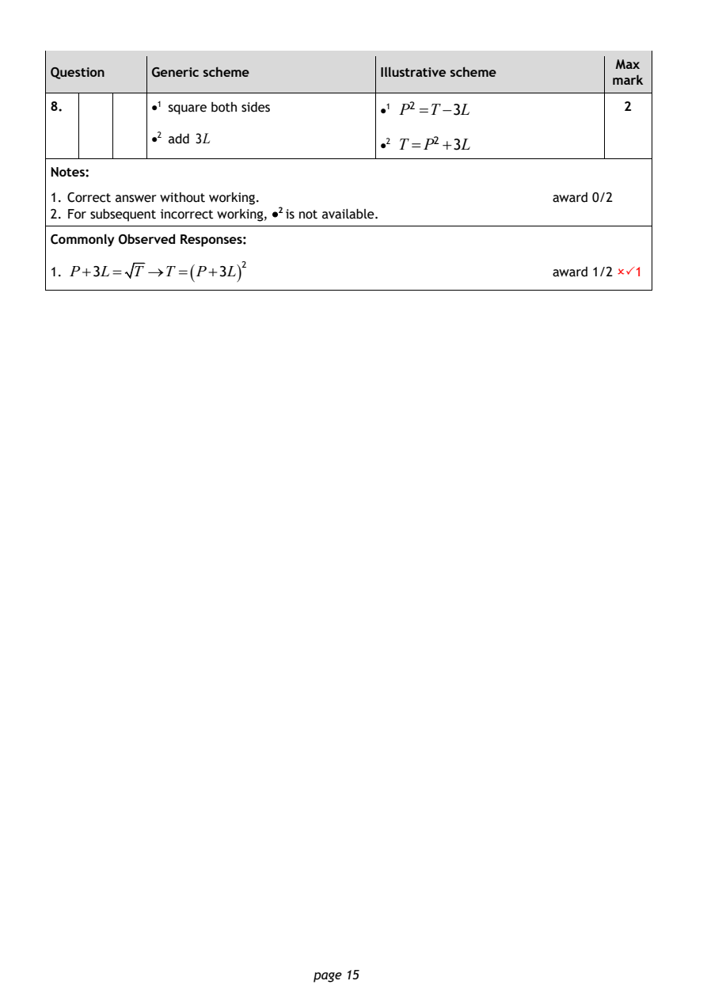
Selectable page text
Max
Question Generic scheme Illustrative scheme
mark
8. •1 square both sides •1 P² =T−3L 2
•2 add 3L
•2 T =P²+3L
Notes:
1. Correct answer without working. award 0/2
2. F or subsequent incorrect working, •² is not available.
Commonly Observed Responses:
1. P+3L= T →T =(P+3L)² award 1/2 1
page 15PDF page 16
Paper 1, Question 9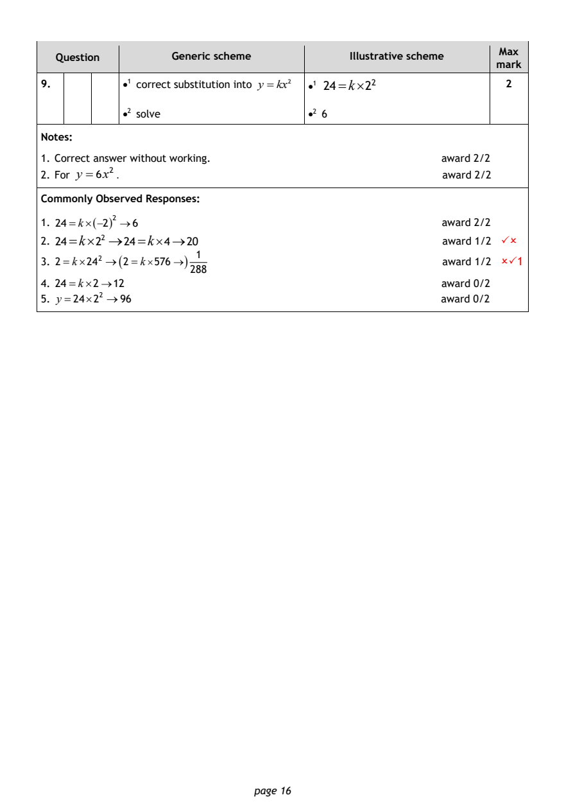
Selectable page text
Max
Question Generic scheme Illustrative scheme
mark
9. •1 correct substitution into y =kx² •1 24=k×2² 2
•2 solve •2 6
Notes:
1. Correct answer without working. award 2/2
2. For y =6x². award 2/2
Commonly Observed Responses:
1. 24=k×(−2)² →6 award 2/2
2. 24=k×2² →24=k×4→20 award 1/2
1
3. 2=k×24² →(2=k×576→) award 1/2 1
288
4. 24=k×2→12 award 0/2
5. y=24×2² →96 award 0/2
page 16PDF page 17
Paper 1, Question 10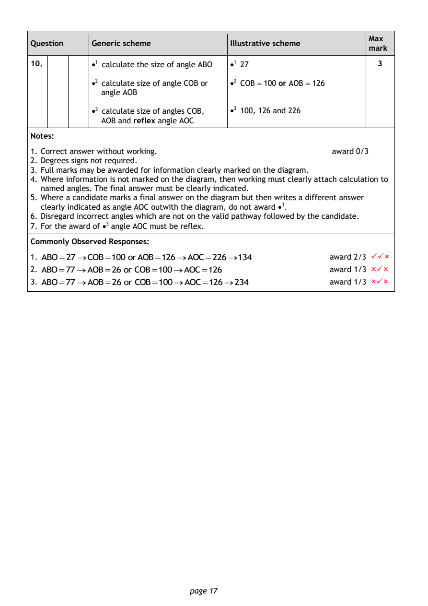
Selectable page text
Max
Question Generic scheme Illustrative scheme
mark
10. •1 calculate the size of angle ABO •1 27 3
•2 calculate size of angle COB or •2 COB = 100 or AOB = 126
angle AOB
•3 calculate size of angles COB, •3 100, 126 and 226
AOB and reflex angle AOC
Notes:
1. Correct answer without working. award 0/3
2. Degrees signs not required.
3. Full marks may be awarded for information clearly marked on the diagram.
4. Where information is not marked on the diagram, then working must clearly attach calculation to
named angles. The final answer must be clearly indicated.
5. Where a candidate marks a final answer on the diagram but then writes a different answer
clearly indicated as angle AOC outwith the diagram, do not award •³.
6. Disregard incorrect angles which are not on the valid pathway followed by the candidate.
7. For the award of •³ angle AOC must be reflex.
Commonly Observed Responses:
1. ABO=27→COB=100 orAOB=126→AOC=226→134 award 2/3
2. ABO=77→AOB=26 or COB=100→AOC=126 award 1/3
3. ABO=77→AOB=26 or COB=100→AOC=126→234 award 1/3
page 17PDF page 18
Paper 1, Question 11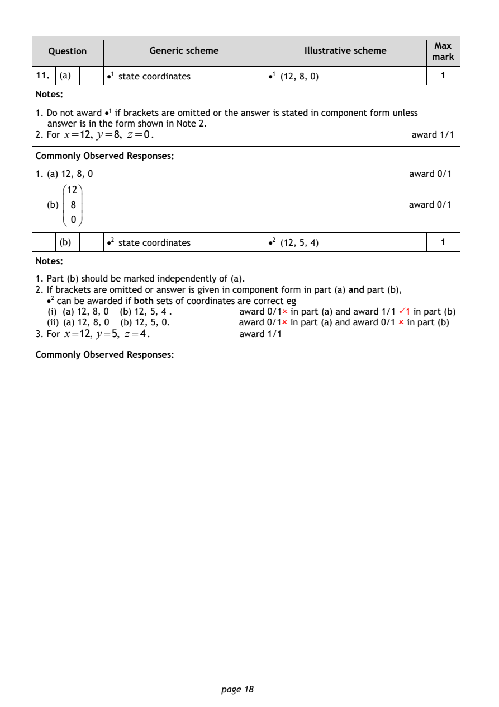
Selectable page text
Max
Question Generic scheme Illustrative scheme
mark
11. (a) •1 state coordinates •1 (12, 8, 0) 1
Notes:
1. Do not award •¹ if brackets are omitted or the answer is stated in component form unless
answer is in t rm n in Note 2.
2. For x=12, y^{h}=^{e}8^{f}^{o}, z=^{s}^{h}0^{o}.^{w} award 1/1
Commonly Observed Responses:
1. (a) 12, 8, 0 award 0/1
12
(b) 8 award 0/1
0
(b) •2 state coordinates •2 (12, 5, 4) 1
Notes:
1. Part (b) should be marked independently of (a).
2. If brackets are omitted or answer is given in component form in part (a) and part (b),
•2 can be awarded if both sets of coordinates are correct eg
(i) (a) 12, 8, 0 (b) 12, 5, 4 . award 0/1 in part (a) and award 1/1 1 in part (b)
(ii) (a 8, (b 5, 0. award 0/1 in part (a) and award 0/1 in part (b)
3. For x⁾=¹1²2^{,}, y=⁰ 5, z⁾=¹²4^{,}. award 1/1
Commonly Observed Responses:
page 18PDF page 19
Selectable page text
[PAGE INTENTIONALLY BLANK]
page 19PDF page 20
Paper 1, Question 12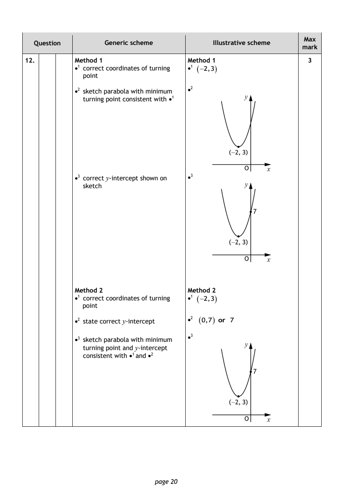
Selectable page text
Max
Question Generic scheme Illustrative scheme
mark
12. Method 1 Method 1 3
•1 correct coordinates of turning •1 (−2,3)
point
•2 sketch parabola with minimum •2
turning point consistent with •¹
•3 correct y-intercept shown on •3
sketch
Method 2 Method 2
•1 correct coordinates of turning •1 (−2,3)
point
•2 state correct y-intercept •2 (0,7) or 7
•3 sketch parabola with minimum
•3
turning point and y-intercept
consistent with •¹ and •²
page 20PDF page 21
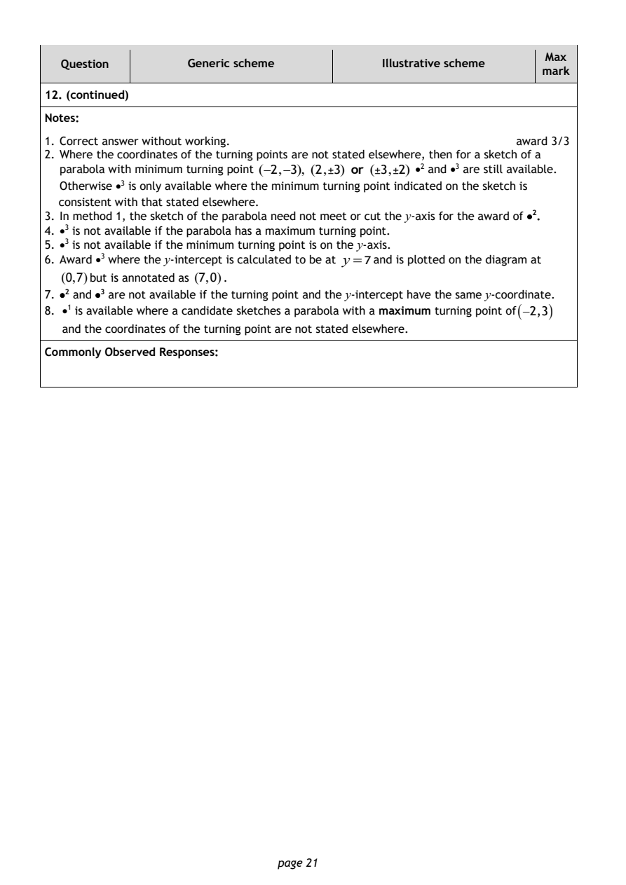
Selectable page text
Max
Question Generic scheme Illustrative scheme
mark
12. (continued)
Notes:
1. Correct answer without working. award 3/3
2. Where the coordinates of the turning points are not stated elsewhere, then for a sketch of a
parabola with minimum turning point (−2,−3), (2,±3) or (±3,±2) •² and •³ are still available.
Otherwise •³ is only available where the minimum turning point indicated on the sketch is
consistent with that stated elsewhere.
3. In method 1, the sketch of the parabola need not meet or cut the y-axis for the award of •².
4. •³ is not available if the parabola has a maximum turning point.
5. •³ is not available if the minimum turning point is on the y-axis.
6. Award •³ where the y-intercept is calculated to be at y=7and is plotted on the diagram at
(0,7)but is annotated as (7,0).
7. •² and •³ are not available if the turning point and the y-intercept have the same y-coordinate.
8. •¹ is available where a candidate sketches a parabola with a maximum turning point of(−2,3)
and the coordinates of the turning point are not stated elsewhere.
Commonly Observed Responses:
page 21PDF page 22
Paper 1, Question 13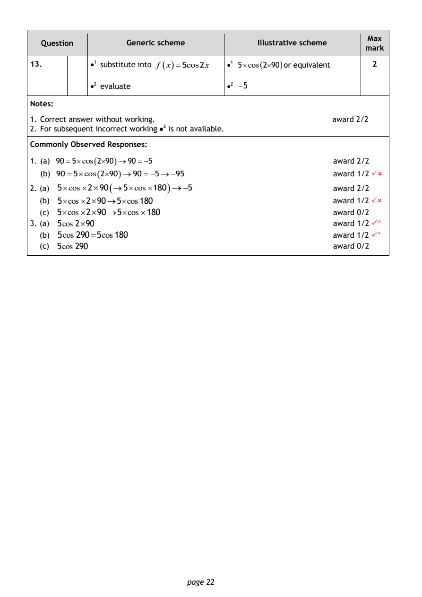
Selectable page text
Max
Question Generic scheme Illustrative scheme
mark
13. •1 substitute into f (x)=5cos2x •1 5×cos(2×90)or equivalent 2
•2 evaluate •2 −5
Notes:
1. Correct answer without working. award 2/2
2. For subsequent incorrect working •² is not available.
Commonly Observed Responses:
1. (a) 90=5×cos(2×90)→90=−5 award 2/2
(b) 90=5×cos(2×90)→90=−5→−95 award 1/2
2. (a)
5×cos×2×90( →5×cos×180)→−5
award 2/2
(b) 5×cos×2×90→5×cos180 award 1/2
(c) 5×cos×2×90→5×cos×180 award 0/2
3. (a) 5cos 2×90 award 1/2 ^
(b) 5cos 290=5cos180 award 1/2 ^
(c) 5cos 290 award 0/2
page 22PDF page 23
Paper 1, Question 14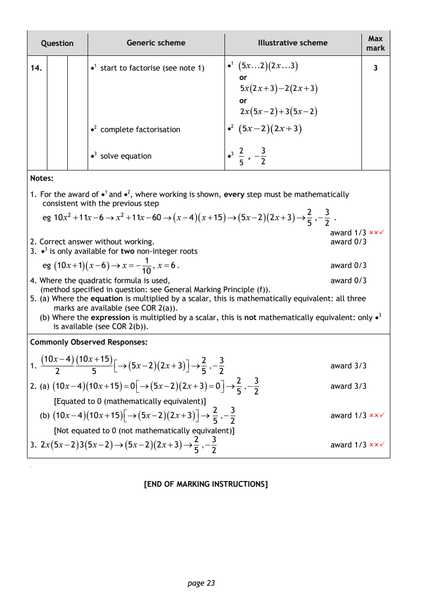
Selectable page text
Max
Question Generic scheme Illustrative scheme
mark
14. •1 start to factorise (see note 1) •1 ( 5x2 )( 2x 3 ) 3
or
5x( 2x+3 )−2 ( 2x+3 )
or
2x( 5x−2 )+3 ( 5x−2 )
•2 complete factorisation •2 ( 5x−2 )( 2x+3 )
2 3
•3 solve equation •3 , −
5 2
Notes:
1. For the award of •¹ and •², where working is shown, every step must be mathematically
consistent with the previous step
2 3
eg 10x² +11x−6→ x² +11x−60→(x−4)(x+15)→(5x−2)(2x+3)→ ,− .
5 2
award 1/3
2. Correct answer without working. award 0/3
3. •³ is only available for two non-integer roots
1
eg (10x+1)(x−6)→ x=− , x=6. award 0/3
10
4. Where the quadratic formula is used, award 0/3
(method specified in question: see General Marking Principle (f)).
5. (a) Where the equation is multiplied by a scalar, this is mathematically equivalent: all three
marks are available (see COR 2(a)).
(b) Where the expression is multiplied by a scalar, this is not mathematically equivalent: only •³
is available (see COR 2(b)).
Commonly Observed Responses:
(10x−4) (10x+15)
2 3
1. →(5x−2)(2x+3)→ ,− award 3/3
2 5 5 2
2 3
2. (a) (10x−4)(10x+15)=0→(5x−2)(2x+3)=0→ ,− award 3/3
5 2
[Equated to 0 (mathematically equivalent)]
2 3
(b) (10x−4)(10x+15)→(5x−2)(2x+3)→ ,− award 1/3
5 2
[Not equated to 0 (not mathematically equivalent)]
2 3
3. 2x(5x−2)3(5x−2)→(5x−2)(2x+3)→ ,− award 1/3
5 2
E
E NF
[END OF MARKING INSTRUCTIONS]
page 23